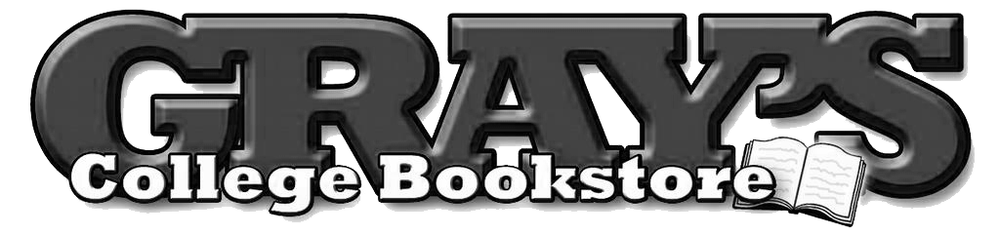
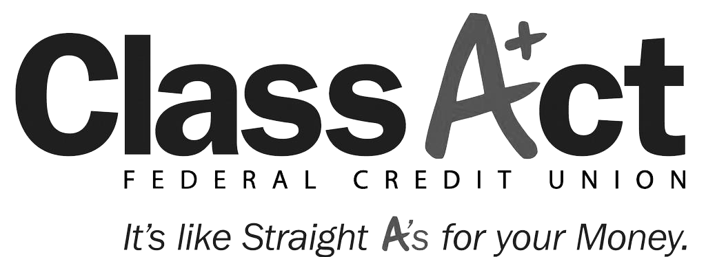
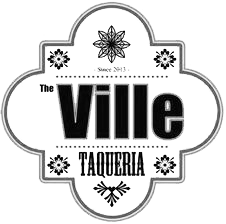
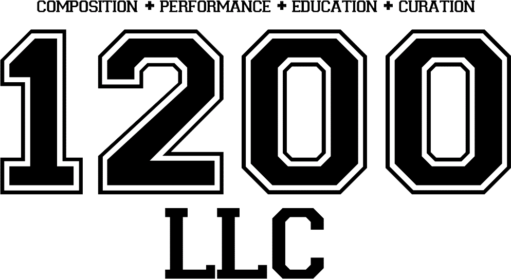
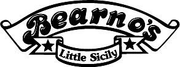
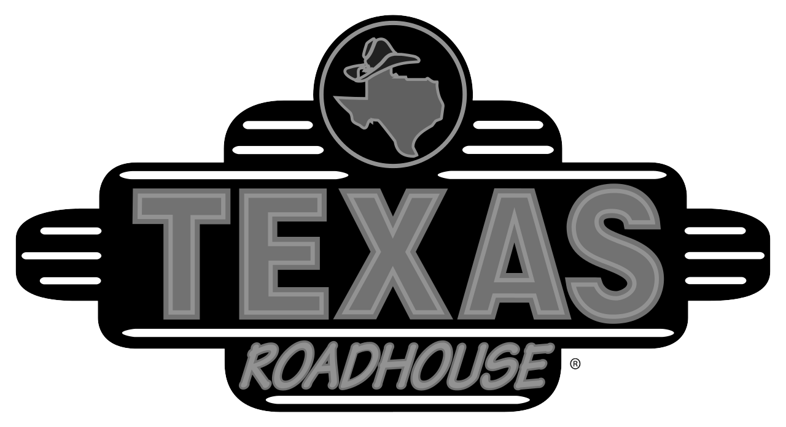
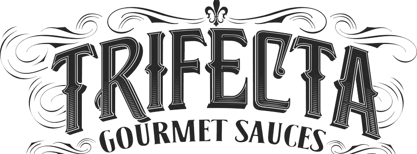
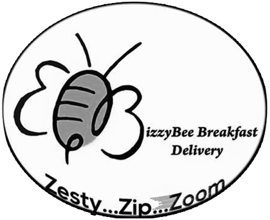
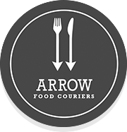

The University of Louisville is the heart of Louisville, KY. CARDS Fest 2015 will be hosted on campus to feature homegrown music, art, and food. Join us as U of L alumni and students rally together for the biggest back-to-school celebration the university has ever seen.
Music at the festival will feature local acts that include U of L students and alumni. The lineup has jazz, rock, blues, hip hop, classical, folk, pop and more!
Jecorey "1200" Arthur is a music educator, composer, and performer. He received both his BME and MAT at the University of Louisville, with instrumental emphasis in percussion. 1200's first love was hip hop. He purchased a KORG D-1200 at the age of twelve, which made him a self-taught producer and recording artist as a teenager. His love for classical music began after he started studying percussion with Dr. Greg Byrne. 1200 approaches his writing style as a classical composer, often embracing contrasting moods, rhythmic flexibility, texture shifts, and abnormal timbres.
Lazy Sunday considers themselves a rare breed of music that touches on musical aspects of rock, funk and blues, the lyrical styles of a singer songwriter mixed with the lyrical passion of hip-hop and the occasional light hearted tinge of reggae dub.
Mize introduced herself internationally with the 10″ release Among the Gold (2009) with Bonnie Prince Billy – a collection of late 19th-century American parlor music. After touring with the Bonnie Prince, Ben Sollee, and Daniel Martin Moore, Cheyenne released her first solo album, Before Lately (2010), on sonaBLAST! Records. An EP, We Don’t Need (2012), and another full-length album, Among the Grey (2013), followed on Yep Roc Records, along with several national tours with her band of Drew English, JC Denison, and Emily Hagihara.
Consisting of core members Ryan Marsh and Kojin Tashiro, The Free Soul Effect is an R&B/Pop band from New Albany, IN. Kojin and Ryan met in high school and immediately started writing original music. After four years of writing and working on perfecting their sound, the duo released their first EP in Tokyo titled KT/RM. They currently perform around Louisville, KY where they continue to write and record their own music, as well as work with other local artists including 1200, Jalin Roze, and Zach Longoria Project
Bourbon. Bluegrass. Basketball. Typically the first thoughts when one thinks of Kentucky - not electronic dance-rock that pays equal homage to arena rock heroes of the past and pop-pioneers of the present. Louisville’s STEREO EMPIRE is intent on changing that. STEREO EMPIRE formed in 2013 and began writing what would become THE MOVES EP. The band remixed and re-released their energetic collection of songs in early 2015 via BandCamp. Since the EP’s release, STEREO EMPIRE have established a name for themselves, performing at a variety of Louisville events including 91.9WFPK’s Live Lunch, Communion Music’s Louisville Residency, and Churchill Downs Twilight Thursday.
Mode Roulette is an alternative jazz/rock ensemble that combines rich textures with original lyrics. Mode Roulette is comprised of six musicians: Skyler on guitar/vocals, Ryan on keyboard/saxophone, Andre on bass, Riley on guitar, Steven on percussion, and Rachel on vocals. Since Mode Roulette’s formation, just over a year ago, the group has played at several Louisville venues including the BBC Taproom, Kaiju, Haymarket Whiskey Bar, The New Vintage, and the Kentucky Center for the Performing Arts and has appeared in a commercial for the Kentucky Center, provided entertainment at the Idea Festival, and opened for multiple performances of Shakespeare in the Park. Each band member brings a diverse musical background to the mix to create a unique and unforgettable sound.
From Louisville, Kentucky, The Big Quiet is a band that approaches the sounds of progressive rock and pop from a modern jazz background.
Experience live music on the West Plaza, food at A Taste of Louisville, art in the Cardinal Lounge and much more.
Live progressive rock and pop band from a modern jazz background.
An exclusive art gallery with sculptures and paintings by U of L alumni and students curated by Angela Ress.
Live alternative six-piece band.
Strive provides Arts & Wellness Education to the Louisville community. Join their percussion experience powered by music therapy happening throughout the festival.
Live R&B and soul band.
A local food buffet experience featuring Louisville founded restaurants Griff’s, Bearnos, Dairy Kastle, Trifecta BBQ and more!
Live electronic dance-rock band.
Live rock, pop, indie, and folk.
Live alternative rock, funk, and jam band.
Live rap, trap, and classical.
The Cardshirt Company will be on-site with merchandise and spirit wear. The CardShirt Company is a student run, not-for-profit organization based out of the University of Louisville’s College of Business. They are dedicated to raising funds for student scholarships and providing students with valuable business experience through the design, marketing, and sale of U of L themed spirit wear and business/organization promotional items.
CARDS Fest 2015 wouldn't be possible without the support and sponsorship of several fantastic local companies. We're proud to be sponsored by these Louisville businesses.

We partnered with Taste of Louisville to bring some of the best food in the Ville to our event, and they delivered some of the biggest names and best places in town. Check out a sampling of some of the restaurants planning to be featured at CARDS Fest 2015.
